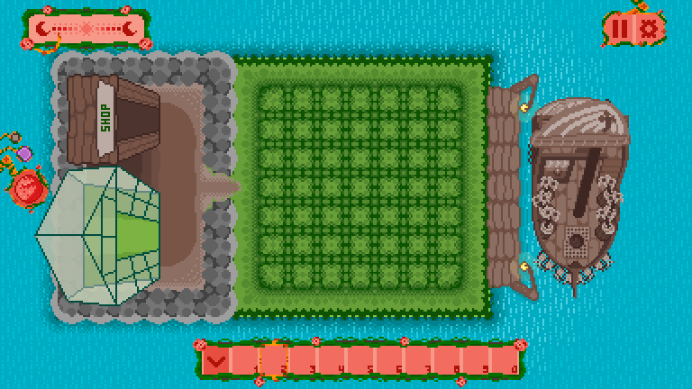
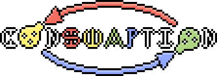
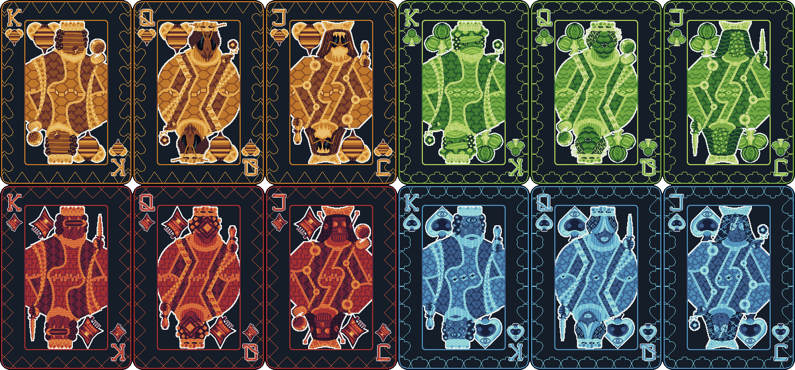
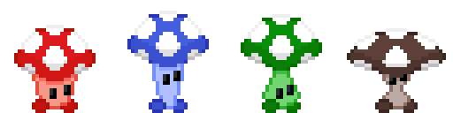
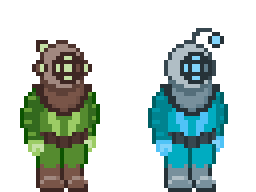

A future interactive garden where you can
water flowers to discover my game projects.
For now, explore my projects below!
Projects
Tinted Isle

A background scene from Tinted Isle.
Tinted Isle is a strategic point-and-click gardening simulator about
discovering and growing unique plants on an island. Players grow plants
of different colors, trade with a diverse cast of visiting merchants,
expand their island, and discover increasingly rare plants.
Behind the Design
One of the biggest challenges in designing Tinted Isle has been
maintaining a spreadsheet containing more than 280 unique plant
combinations and their effects.
I create all of the game's artwork and am one of its two main designers
on a six-person team. Tinted Isle is planned for release
in .
Project Details
Role: Artist and Game Designer
Team: 6 people
Tools: Unity, C#, Google Spreadsheets, Aseprite, Pixquare
ConSwaption

A logo of ConSwaption.
ConSwaption is a physical memory card game where players match ingredients
to craft strategic potions and defeat rival wizards. It combines the
familiarity of a matching game with additional strategy through deciding
which potions to create and how to use them against opponents.
As part of a nine-person team, I created all of the game's artwork and
contributed to its design and playtesting. We developed the game through
paper prototyping before producing a finished physical version. ConSwaption
was also shown at the 2026 MSU CAS Spring Games Showcase and is currently
being ordered through The Game Crafter.
Project Details
Role: Artist, Game Designer, and Playtester
Team: 9 people
Tools: Aseprite, Pixquare, paper prototyping, The Game Crafter
Hive Blinds

Cards from Hive Blinds.
Hive Blinds is a strategic trick-taking card game about using political
prowess to influence four hivemind races fighting for control of a planet.
Players compete to manipulate the conflict and position themselves to
come out on top.
This is a two-person project where I create all of the artwork and share
the design and playtesting responsibilities. We designed Hive Blinds so
that the complete game can be played at home using a standard 52-card
deck. The physical game is complete, with the goal of developing a digital
version this year.
Project Details
Role: Artist, Game Designer, and Playtester
Team: 2 people
Tools: Aseprite, Pixquare, Tabletop Simulator
Shroom to Breathe

Characters from Shroom to Breathe.
Shroom to Breathe is a time-management collectathon and mental wellness
app that rewards players for getting work done. Players set timers while
they work and collect little mushroom creatures along the way. They can
breed, organize, and discover new shrooms while using the app to stay
productive.
I am one of two developers on the project and am responsible for the
artwork as well as the design of the game's systems and user interface.
My work covers essentially every part of the experience outside of
programming and sound. Shroom to Breathe is planned for release on the
App Store this winter.
Project Details
Role: Artist, Game Designer, and UI/UX Designer
Team: 2 people
Tools: Unity, C#, Aseprite, Pixquare
Fish Flop

Characters from Fish Flop.
Fish Flop is a 2.5D pixel-art puzzle platformer where two miniature divers
navigate a series of fish tanks. Players rotate around each tank to change
the perspective of the level and flip aquarium decorations to solve
puzzles, open new paths, and progress to the next tank.
On our seven-person team, I created all of the 2D artwork and helped
prototype and design about half of the game's levels. The project combines
my pixel art with a 3D environment, making the interaction between its 2D
and 3D elements an important part of both the visual design and gameplay.
A 15-level demo is currently available on itch.io.